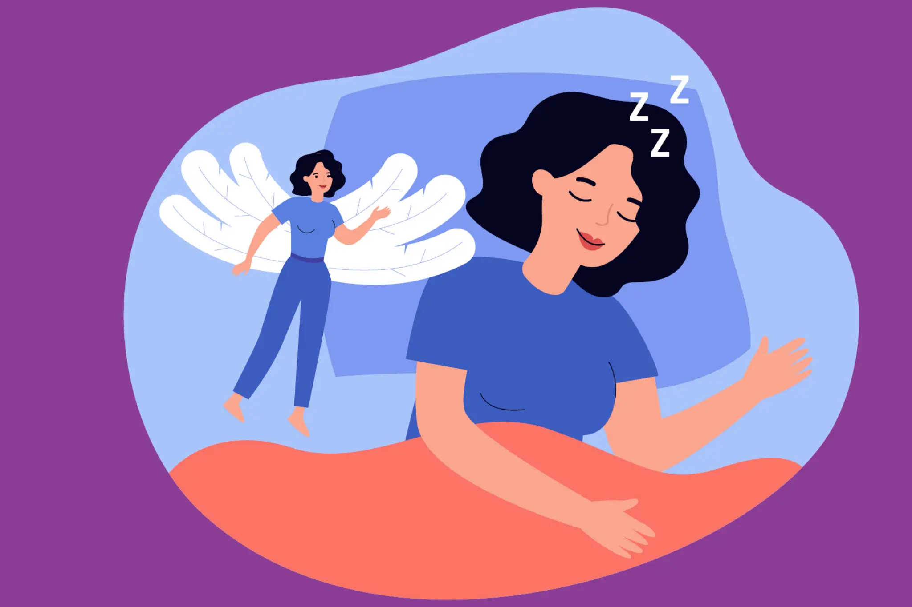

การนอนหลับ
การนอนหลับเป็นกระบวนการสำคัญที่ช่วยให้ร่างกายและสมองได้พักผ่อนและฟื้นฟูตัวเอง ในระหว่างการนอนหลับร่างกายมีการฟื้นฟูส่วนต่าง ๆ และสมองมีโอกาสจัดการกับข้อมูลและประสบการณ์ที่ได้รับในแต่ละวัน ดังนั้นการนอนหลับอย่างเพียงพอจึงมีความสำคัญต่อทั้งร่างกายและจิตใจ สำหรับนักเรียน การนอนหลับมีส่วนเกี่ยวข้องกับสมาธิ ความจำ อารมณ์ และความสามารถในการเรียน หากนอนน้อยหรือพักผ่อนไม่เพียงพอเป็นประจำ อาจทำให้รู้สึกเหนื่อยง่าย ง่วงในระหว่างวัน มีสมาธิลดลง และทำกิจกรรมต่าง ๆ ได้อย่างไม่มีประสิทธิภาพเท่าที่ควร การสร้างนิสัยการนอนที่ดีสามารถเริ่มจากการจัดเวลานอนและเวลาตื่นให้เป็นกิจวัตร พยายามลดกิจกรรมที่ทำให้ตื่นตัวก่อนเข้านอน และจัดห้องนอนให้มีบรรยากาศที่เหมาะสมต่อการพักผ่อน นอกจากนี้ควรจัดสมดุลระหว่างเวลาเรียน การทำงาน การใช้โทรศัพท์หรือสื่อบันเทิง และเวลาพักผ่อน เพื่อให้ร่างกายมีเวลาฟื้นฟูอย่างเหมาะสม